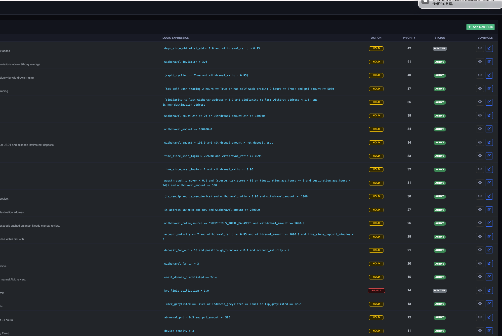
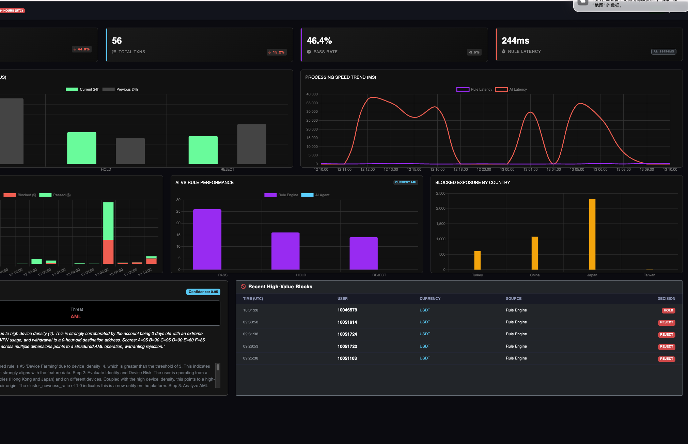
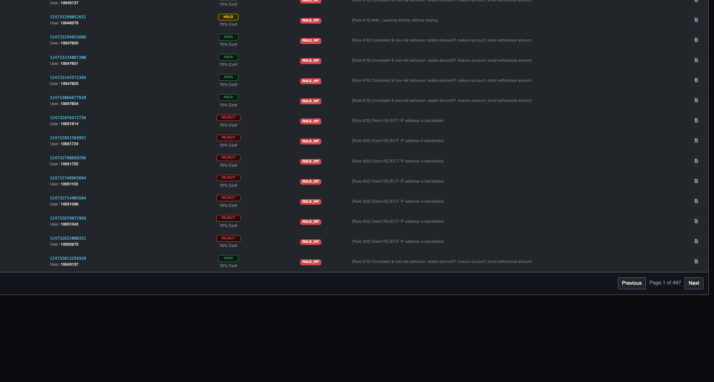
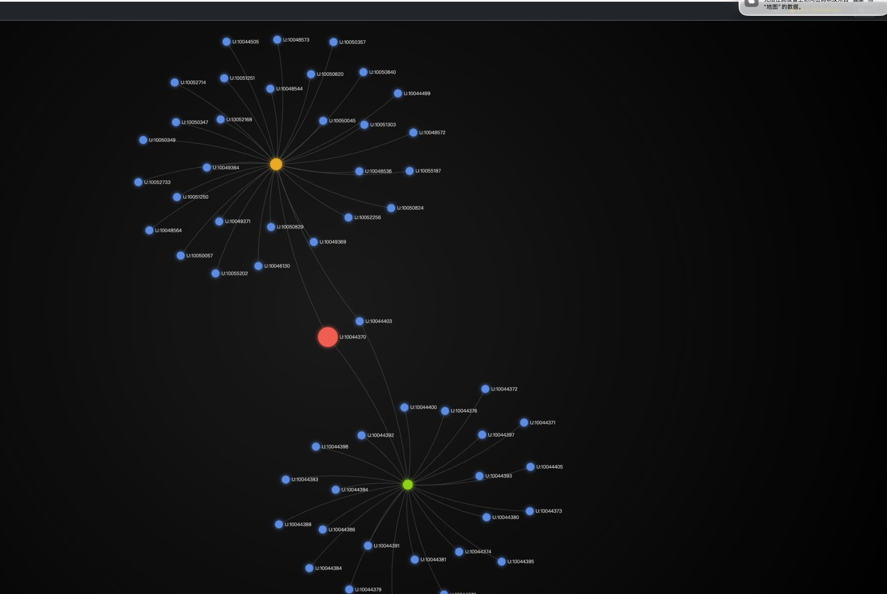

Riskinate.AI is a risk agent that handles fraud, scam, AML, and trading risk end-to-end — from entity scoring and device fingerprinting to rule engine decisions and AI-powered case review. No large ops team needed.
Risk Detection Service
Not a system you build — a risk agent you plug in. Covers fraud, scam, AML, and trading risk with built-in intelligence at every layer.
Real-time risk signals on IP addresses, email reputation, device fingerprints, and behavioral patterns — enriching every transaction with context before decisions are made.
Configurable rule engine with pre-built and custom strategies across fraud, AML, and trading risk. Auto-pass, auto-reject, or hold — with full auditability.
LLM-powered AI skills and ML models that review held cases intelligently — understanding context, history, and patterns like a senior analyst, but 24/7 and at scale.
Our AI agent sits between your rule engine and human reviewers — intelligently resolving held cases around the clock. It's faster, more accurate, and costs a fraction of a full ops team. The result: 80% less manual review, no overnight shifts, and consistent decisions across fraud, AML, and trading risk.
Product
A unified command center for your compliance and risk teams.




How It Works
Every transaction flows through a tiered system — from automated rules to AI review to human escalation — so you only pay for human attention when it's truly needed.
Every transaction hits the rule engine first. Clear-cut cases are auto-passed or auto-rejected instantly. Ambiguous cases are held for deeper review.
Held cases go to our AI agent — an intelligent reviewer that operates 24/7, analyzing context, patterns, and history faster and more accurately than human analysts.
Only the cases AI cannot confidently resolve reach your team. This eliminates up to 80% of manual workload, so you don't need a large risk ops team for round-the-clock coverage.
Pricing
Transparent pricing that scales with your exchange. All plans include rule engine, risk strategy, and LLM-powered case review.
All plans include a free 2-week pilot. Annual contracts save 20%.
FAQ
An AI risk agent is an autonomous software system that continuously monitors cryptocurrency exchange activity to detect fraud, enforce AML compliance, and identify trading manipulation in real time — replacing large manual compliance teams with intelligent automation.
Riskinate.AI uses advanced pattern recognition, anomaly detection, and LLM-powered case review to identify suspicious account behavior, fake identities, unauthorized transactions, and other fraudulent activity across your exchange in real time.
Yes. Riskinate.AI provides automated transaction monitoring, sanctions screening, and suspicious activity reporting to keep your exchange compliant with global AML regulations including FATF guidelines, FinCEN requirements, and local jurisdiction rules.
Our AI agent analyzes order books, trade patterns, and user behavior to detect wash trading, spoofing, layering, and other forms of market manipulation in real time, helping exchanges maintain market integrity.
Riskinate.AI can be deployed in as little as 1 week for smaller exchanges. The system integrates via API with your existing exchange infrastructure and starts protecting you immediately with pre-built rule engines and AI risk scoring.
A traditional compliance team costs $2M+ annually. Riskinate.AI starts at $3K-$5K per month, replacing up to 80% of manual review workload while improving accuracy and consistency. All plans include a free 2-week pilot.
Get in touch to schedule a demo and see Riskinate.AI in action.
Request a Demo